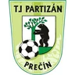

Posledné výsledky
- TJ Spartak KvašovA-mužstvo · 15. kolo · vonku Výhra, 2:0
- TJ Nový Život Veľké UherceU19 · 15. kolo · doma Prehra, 0:1
- ŠK Vegum Dolné VesteniceU19 · 14. kolo · vonku Výhra, 4:3
- FK SenicaA-mužstvo · 14. kolo · doma Výhra, 5:0
- TJ-ŠK RadošinaU15 · 11. kolo · vonku Výhra, 7:1
- OFK KrnčaU15 · 10. kolo · doma Výhra, 6:0
Program
Áčko · 33 bodov
V. liga Severozápad
| # | Tím | Z | V | R | P | Skóre | B |
|---|---|---|---|---|---|---|---|
| 1 | 15 | 10 | 3 | 2 | 30:15 | 33 | |
| 2 | 15 | 10 | 3 | 2 | 44:22 | 33 | |
| 3 | 15 | 10 | 1 | 4 | 29:12 | 31 | |
| 4 | 15 | 8 | 5 | 2 | 36:20 | 29 | |
| 5 | 15 | 8 | 4 | 3 | 35:20 | 28 | |
| 6 | 15 | 7 | 3 | 5 | 40:18 | 24 | |
| 7 |  TJ Partizán Prečín | 15 | 7 | 3 | 5 | 23:18 | 24 |
| 8 | 15 | 7 | 3 | 5 | 39:24 | 24 | |
| 9 | 15 | 6 | 5 | 4 | 30:20 | 23 | |
| 10 | 15 | 6 | 3 | 6 | 28:33 | 21 | |
| 11 | 15 | 5 | 3 | 7 | 18:33 | 18 | |
| 12 | 15 | 4 | 3 | 8 | 19:37 | 15 | |
| 13 | 15 | 3 | 3 | 9 | 20:40 | 12 | |
| 14 | 15 | 2 | 2 | 11 | 19:34 | 8 | |
| 15 | 15 | 2 | 2 | 11 | 8:35 | 8 | |
| 16 | 15 | 1 | 2 | 12 | 13:50 | 5 |
Derby s Topoľčanmi
Tovarníky susedia s Topoľčanmi a v rokoch 1976 – 1992 boli dokonca časťou mesta. Na ihrisku sa susedia stretli dvakrát v Slovenskom pohári, oba razy v Topoľčanoch.
- 2022Slovnaft Cup, 1. kolo, v Topoľčanoch0:1Tovarníky vyhrali na štadióne v Topoľčanoch.
- 2024Slovnaft Cup, 1. kolo, v Topoľčanoch0:0Bez gólov, penalty 5 : 3 pre Topoľčany, 1 250 divákov.